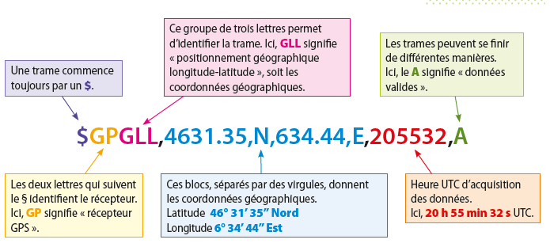

Chapitre 5 – Cartographie et localisation
Localisation avec le système GPS
Doc. 1 La naissance du GPS
Le nom officiel du GPS est NAVSTAR GPS (Navigation System using Time And Ranging). C’est un système de positionnement par satellites, conçu à l’origine par le département de la Défense des États-Unis. Il permet de se géolocaliser : un récepteur (smartphone, voiture, montre…) calcule sa position grâce aux signaux envoyés par des satellites qui tournent autour de la Terre.
Le premier satellite a été lancé en 1978 et le système a été déclaré opérationnel en 1995, avec 24 satellites. Aujourd’hui, il en compte plus de 30. Un récepteur civil est précis à quelques mètres (5 à 10 m en général), et le temps est donné à environ une microseconde près.
Ensemble des techniques permettant de localiser un dispositif sur lequel un récepteur a été posé (téléphone portable, véhicule, etc.). Il est alors possible de le positionner sur un plan ou sur une carte à l’aide de ses coordonnées.
Méthode mathématique qui permet de déterminer la position relative d’un point en utilisant la géométrie des triangles et la mesure de distances.
Texte réécrit d’après le document de la séance, avec des chiffres mis à jour.
? Questions 1 et 2
Regarde la vidéo ci-dessous avant de répondre.
Cliquer ici si la vidéo ne s’affiche pas.
Qu’est-ce que le système GPS ?
Combien de satellites faut-il pour déterminer la position d’un récepteur GPS ? Décris leurs rôles.
Doc. 2 Le système Galileo
Galileo est le système européen de positionnement par satellites (en anglais, GNSS : Global Navigation Satellite System). Ce programme a pour objectif principal de doter l’Union européenne d’un système de navigation et de datation par satellite indépendant du GPS américain, et sous contrôle civil.
Il repose sur une constellation de 30 satellites (24 en service et 6 de secours) qui orbitent à environ 23 222 km d’altitude. Galileo est compatible avec le GPS et avec le système russe Glonass : un même récepteur peut utiliser plusieurs systèmes à la fois. Il offre aussi des services de recherche et de sauvetage. Les premiers services ont été déclarés en décembre 2016.
Le système GPS permet de déterminer une position à environ 10 mètres près. Galileo est plus précis, de l’ordre du mètre. Sur un smartphone, on peut voir quels systèmes sont utilisés (GPS, Galileo, Glonass, Beidou le système chinois).
Sources : CNES, Galileo.
? Question 3
Pourquoi l’Europe s’est-elle dotée de son propre système de positionnement par satellites ? Quels en sont les avantages ?
Doc. 3 Le protocole NMEA
La National Marine Electronics Association est une association à but non lucratif fondée par des professionnels de l’électronique des périphériques marins (fabricants, distributeurs, revendeurs et institutions d’enseignement). Un de ses objectifs est d’harmoniser et standardiser les équipements de la marine : pour simplifier, on peut considérer le standard NMEA comme le protocole de transmission des données entre les instruments et les équipements électroniques liés au GPS.
Ensemble de règles à respecter pour que deux entités puissent échanger de l’information et communiquer à travers un réseau de télécommunications.
La trame NMEA-0183
Dans le standard NMEA-0183, toutes les données sont transmises sous la forme de caractères ASCII, sur des lignes appelées trames, à la vitesse de 4 800 bauds.
Unité de mesure du nombre de symboles transmis par seconde.

$ ; GP identifie le récepteur (GPS) ; GLL signale un « positionnement géographique longitude-latitude » ; puis viennent la latitude, la longitude, l’heure UTC d’acquisition (ici 20 h 55 min 32 s) et la lettre A qui signifie « données valides ».Dans la trame, la latitude 4631.35 se lit 46° 31,35′ : les chiffres après le point sont des minutes décimales, pas des secondes. Le schéma ci-dessus les écrit 46° 31′ 35″ pour simplifier ; en convertissant (0,35′ × 60 ≈ 21″), on obtient environ 46° 31′ 21″.
? Questions 4 et 5
Quel était le but de la création du protocole NMEA ?
Procède à l’extraction des informations intéressantes des trames NMEA-0183 suivantes. Exprime la latitude et la longitude en degrés, minutes et secondes (°, ′, ″).
Dans une trame, les chiffres après le point sont des minutes décimales. Pour obtenir les secondes, multiplie la partie décimale par 60 : par exemple 0,50′ = 0,50 × 60 = 30″. Ainsi 4631.35 se lit 46° 31,35′, soit 46° 31′ 21″.
b. $GPGLL,1154.65,S,2356.76,W,045432,A